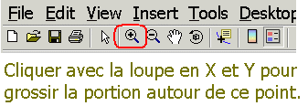
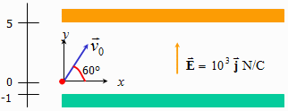
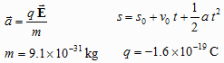
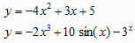
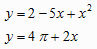

Les solutions sont dans le répertoire >Chap3\Scripts.
GE01 – Un véhicule se déplace à une vitesse constante de 25 m/s dans une zone limitée à 80 km/h.
Au temps t = 0, la voiture d'un policier démarre et accélère afin d'intercepter le véhicule. Supposer que la poursuite débute au moment où le véhicule en infraction croise celui du policier et que ce dernier accélère constamment à 4 m/s2 jusqu'à l'interception.
Combien de temps faut-il au policier pour intercepter le véhicule du contrevenant ?

GE02 – Une balle est lancée suivant un angle d'élévation de 38° d'un toit d'une hauteur de 35 m à une vitesse initiale de 23 m/s.
Rappel : s = h0
+ v0 t + 0.5 g t²
où
s est la hauteur en m,
h0 est la hauteur du bâtiment
t est le temps en secondes,
v0 est la vitesse initiale,
g est l'accélération, -9.8 m/s².
GE03 – Un électron est projeté à
une vitesse initiale v0
de 5 × 106 m/s à 60°
entre deux plaques séparées par 6 cm.
Initialement, l'électron est à l'origine du
système d'axes. Dans la région entre les
deux plaques, il existe un champ électrique E
constant. Supposer que les plaques ont une
longueur infinie.

L'accélération a est orientée vers le bas, et l'électron poursuit une
trajectoire parabolique. La distance s
en mètre parcourue par l'électron en fonction du
temps t est exprimée par l'équation
mathématique ci-dessous; q et m
sont la charge et la masse de l'électron.

GE04 – Déterminer graphiquement les solutions entre - 3 π et + 3 π de l'équation transcendante 2 sin(x) = x.
GE05 – Déterminer graphiquement les solutions
entre x = - π et
x = + π pour les deux courbes
suivantes :

GE06 – Déterminer graphiquement les solutions
entre x = - 3 π et
x = + 3 π pour les deux
courbes suivantes :
